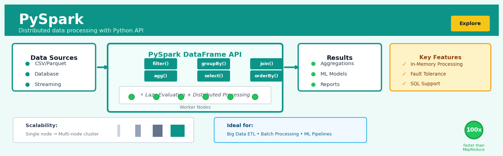

PySpark#


The biggest mistake teams make with PySpark is treating it like pandas and calling collect() or toPandas() on massive datasets, which defeats the entire purpose of distributed computing by bringing everything to the driver node. Always use PySpark's native aggregations and transformations to keep data distributed across workers, and only bring small, pre-aggregated results back to the driver. Remember that PySpark's lazy evaluation means your transformations are optimized as a DAG before execution, so chain operations freely without worrying about intermediate overhead.
The 60-Second Version#
What it does: PySpark transforms and analyzes datasets too large to fit on a single computer by automatically splitting the work across multiple machines.
When to use it: Your data exceeds what your laptop or a single server can handle—typically beyond 10–20GB—or processing takes hours when you need it done in minutes.
What you get back: Cleaned, transformed, or summarized datasets ready for analysis, visualization, or machine learning, processed in a fraction of the time.
At a Glance
Difficulty |
Moderate |
Typical runtime |
Minutes on billions of rows (vs. hours single-machine) |
What you bring |
Large datasets in files, databases, or data lakes |
What you get |
Transformed DataFrames or aggregated results |
Heuristix bucket |
Explore — Shaping & Transforming Data |
PySpark doesn’t execute anything until you explicitly ask for results—understanding this “lazy evaluation” prevents confusion when code appears to run instantly but produces nothing until you trigger an action.
Learning Objectives#
After reading this chapter, a business user will be able to:
Identify when a dataset or transformation problem requires PySpark rather than pandas by evaluating data volume, memory constraints, and processing time requirements.
Interpret PySpark execution plans and job metrics to explain to stakeholders why certain data operations take longer than expected and what infrastructure investments might reduce processing time.
Decide whether to invest in distributed computing infrastructure by estimating the cost-benefit trade-off between processing time savings and cluster resource expenses for recurring analytical workloads.
After reading this chapter, a data scientist will be able to:
Implement common data transformations (filtering, aggregations, joins, window functions) in PySpark while correctly handling null values, data type mismatches, and partition skew.
Tune partition counts, broadcast join thresholds, and shuffle parameters to optimize query performance based on data characteristics and cluster configuration.
Validate transformation correctness by comparing sample outputs against pandas equivalents and diagnose performance bottlenecks using Spark UI metrics like task duration, shuffle read/write volumes, and executor memory usage.
Overview#
PySpark is the Python API for Apache Spark, a distributed computing framework designed to process large-scale datasets across clusters of machines using parallel computation. Its core purpose is to enable data scientists and engineers to perform data shaping, transformation, and analysis on datasets that exceed the memory and processing capacity of a single machine. PySpark belongs to the family of distributed computing frameworks and implements a lazy evaluation paradigm with a DataFrame abstraction that mirrors familiar pandas-like operations while executing across distributed partitions.
When to Use This#
Use when your dataset exceeds single-machine memory — When working with datasets larger than 10-50GB, traditional pandas operations become impractical or impossible; PySpark distributes the data across cluster nodes.
Use when you need to process streaming data — PySpark Structured Streaming provides native support for real-time data pipelines, making it ideal for IoT sensor feeds, clickstream data, or transaction monitoring.
Use when transformation logic must scale horizontally — If your data processing needs will grow with business expansion, designing pipelines in PySpark ensures they scale without rewriting.
Use when you require fault-tolerant data processing — PySpark’s lineage-based recovery mechanism automatically reconstructs lost partitions, critical for long-running production jobs.
Use when performing complex aggregations across billions of records — Operations like group-by aggregations, window functions, and joins on massive tables are optimised through Spark’s Catalyst query optimiser.
Use when integrating with big data ecosystems — PySpark natively reads from and writes to HDFS, S3, Delta Lake, Parquet, Hive, and JDBC sources, making it the natural choice for enterprise data lakes.
Do NOT use when your data fits comfortably in pandas — For datasets under 1-5GB, the overhead of Spark’s distributed coordination outweighs its benefits; pandas will be faster and simpler.
Do NOT use when you need real-time, sub-millisecond latency — Spark’s batch-oriented architecture introduces latency; consider specialised streaming systems or in-memory databases for ultra-low-latency requirements.
Do NOT use for iterative algorithms requiring rapid state updates — While Spark MLlib supports machine learning, algorithms requiring millions of fast parameter updates may perform better in specialised frameworks.
Questions This Answers#
Understanding What’s Happening Across Our Business#
Why are we losing customers in the Midwest but retaining them on the coasts — what’s different about those markets?
Which products are frequently purchased together, and are we missing cross-sell opportunities that could increase average order value by 20%?
Can we identify the specific customer journeys that lead to our highest lifetime value accounts versus those who churn in the first 90 days?
What happened during the holiday season that caused our website traffic to spike but conversions to drop — was it inventory, pricing, or checkout issues?
Are there patterns in our supply chain delays over the past two years that explain why West Coast fulfillment takes 3 days longer than East Coast?
Predicting Future Performance and Risk#
Based on the last five years of sales data, which regions are most likely to hit their Q4 targets and which need intervention now?
If we continue our current customer acquisition spending, what will our customer base look like in 18 months — and will we hit our growth targets?
Can we predict which customers are at risk of churning in the next quarter so we can proactively reach out before we lose them?
What would happen to our revenue if we changed our pricing structure — can we model different scenarios before we commit?
Optimizing Operations and Strategy#
Should we close underperforming stores or invest more in them — which approach gives us better ROI based on historical recovery patterns?
How should we reallocate our marketing budget across channels to maximize conversions — what does the data say about where our best customers come from?
Which customer segments should we prioritize with our limited sales resources to drive the most revenue this quarter?
If we streamline our product catalog from 50,000 SKUs to 30,000, which items should we cut that won’t significantly impact revenue but will reduce operational complexity?
How It Works#
Imagine you’re organizing a massive community food drive with 10,000 donation boxes to sort. Instead of one person opening each box, recording its contents, categorizing items, and calculating totals (which would take weeks), you hire 100 volunteers and give each person 100 boxes. Each volunteer does the exact same sorting task on their smaller pile, then reports their results to you. You simply combine their 100 summary reports into one final tally—the whole job finishes in an afternoon instead of a month. PySpark works exactly this way: it splits your giant dataset into chunks, sends each chunk to a different computer (called a “worker”), and has all workers process their piece simultaneously using the same instructions.
ORIGINAL DATASET (10 million rows)
┌─────────────────────────────────────┐
│ CustomerID │ Purchase │ Category │
│ ... │ ... │ ... │
│ (too big for one machine) │
└─────────────────────────────────────┘
│
▼
SPLIT INTO PARTITIONS
┌───────┬───────┬───────┬───────┐
│ Part1 │ Part2 │ Part3 │ Part4 │
│ 2.5M │ 2.5M │ 2.5M │ 2.5M │
└───────┴───────┴───────┴───────┘
│ │ │ │
▼ ▼ ▼ ▼
Worker1 Worker2 Worker3 Worker4
[filter][filter][filter][filter]
[group] [group] [group] [group]
[sum] [sum] [sum] [sum]
│ │ │ │
└───────┴───────┴───────┘
│
▼
COMBINE RESULTS
┌─────────────────────┐
│ Category │ Total │
├──────────┼──────────┤
│ Books │ $450K │
│ Electronics│ $890K │
└──────────┴──────────┘
1. Define your transformation plan. When you write PySpark code to filter, group, or aggregate data, nothing actually happens yet. PySpark just records your instructions as a recipe—a blueprint of operations. This is called “lazy evaluation.” It’s like writing a cooking recipe without turning on the stove.
2. Split the dataset into partitions. When you finally ask for results, PySpark divides your massive dataset into chunks (typically 128MB each). Think of these as splitting a phone book into sections, where each section goes to a different worker computer in your cluster.
3. Distribute partitions to worker machines. Each worker receives its assigned partition and a copy of your transformation recipe. These workers operate completely independently—they don’t talk to each other or wait for anyone. They just execute the same instructions on their own slice of data.
4. Execute transformations in parallel. All workers simultaneously apply your filters, groupings, and calculations to their partitions. If you asked to find all purchases over one hundred dollars and sum them by category, each worker does exactly that—but only on their chunk of rows.
5. Shuffle data when necessary. For operations like grouping by category, workers need to reorganize data so all rows with the same category land on the same machine. PySpark orchestrates this shuffle, moving rows between workers as needed.
6. Combine partial results. Each worker produces a small summary of their partition. PySpark collects these summaries and merges them into your final answer—exactly like combining those volunteer reports into one master tally.
The key insight: By breaking large problems into identical smaller problems that can be solved independently and simultaneously, PySpark turns a week-long computation on one machine into a minutes-long computation across many machines.
The Intuition#
Imagine you are tasked with counting every word in every book ever written in English. If you attempted this alone, reading one book at a time, the task would take centuries. However, if you could distribute the books across thousands of librarians, each counting words in their assigned books, then combine their results, the task becomes manageable. This is the fundamental insight behind PySpark: divide massive computational tasks into smaller pieces, process them in parallel across many machines, and aggregate the results.
The key abstraction that makes this possible is the Resilient Distributed Dataset (RDD), though modern PySpark primarily uses its higher-level successor, the DataFrame. Think of a DataFrame as a massive spreadsheet that has been horizontally sliced into partitions, with each partition residing on a different machine in your cluster. When you write a transformation like df.filter(col("amount") > 1000), you are not immediately executing that filter. Instead, you are constructing a recipe—a directed acyclic graph (DAG) of transformations that describes what you want to happen. Only when you request a result through an action (like .count() or .show()) does Spark actually execute the computation, optimising the entire chain of transformations before running anything.
This lazy evaluation model provides two critical benefits. First, Spark’s Catalyst optimiser can examine your entire transformation pipeline and restructure it for efficiency—pushing filters early to reduce data movement, combining multiple operations, and selecting optimal join strategies. Second, if a partition is lost due to machine failure, Spark can reconstruct it by replaying the transformations on the original data rather than maintaining expensive redundant copies. This lineage-based fault tolerance is what makes the datasets “resilient” in RDD. The combination of lazy evaluation, automatic optimisation, and fault tolerance transforms PySpark from a simple parallelisation tool into a robust platform for production data engineering.
The Mathematics#
Formal Problem Setup#
Let \(\mathcal{D}\) represent a dataset consisting of \(N\) records distributed across \(P\) partitions:
Each record \(r_i \in \mathcal{D}\) is a tuple of \(M\) typed attributes:
where \(T_j\) denotes the domain type of attribute \(j\) (integer, float, string, timestamp, etc.).
Transformation Algebra#
PySpark operations form a transformation algebra. Let \(\tau: \mathcal{D} \rightarrow \mathcal{D}'\) denote a transformation. The fundamental transformations include:
Selection (Filter): Given predicate \(\phi: r \rightarrow \{0, 1\}\):
Projection: Given attribute subset \(A \subseteq \{1, \ldots, M\}\):
Aggregation: Given grouping function \(g\) and aggregate function \(f\):
Partitioning and Data Distribution#
The distribution of records across partitions follows a partitioning function \(h: r \rightarrow \{1, \ldots, P\}\). For hash partitioning on key \(k\):
The partition skew \(S\) measures load imbalance:
Optimal partitioning yields \(S \approx 0\); highly skewed data produces large \(S\), causing performance degradation.
Join Complexity#
For an equi-join between datasets \(\mathcal{D}_1\) and \(\mathcal{D}_2\) on key \(k\):
The communication cost for a shuffle join is:
For broadcast join (when \(|\mathcal{D}_2| \ll |\mathcal{D}_1|\)):
Broadcast join is preferred when \(|\mathcal{D}_2| < \theta_{\text{broadcast}}\), where \(\theta_{\text{broadcast}}\) is configurable (default 10MB in Spark).
Catalyst Optimiser Cost Model#
The Catalyst optimiser selects execution plans by minimising estimated cost. For a plan \(\mathcal{P}\):
Cost estimation relies on statistics:
Assumptions and Edge Cases#
Assumptions:
Data can be partitioned such that partitions fit in executor memory
Transformations are deterministic (for lineage-based recovery)
Network bandwidth is sufficient for shuffle operations
Data types are consistent within columns
Edge Cases:
Empty partitions: When filters are highly selective, some partitions may become empty, causing task skew
Partition explosion: Joins on high-cardinality keys can produce output partitions exceeding memory
Null handling: Null values do not match in joins and propagate through aggregations per SQL semantics
Understanding the Mathematics#
Partition Distribution and Data Locality#
The equation:
Read it aloud:
“Partition i contains all the records from dataset D where the hash of the record’s key, modulo the number of partitions, equals i.”
What each symbol means:
\(P_i\) = the i-th partition (a subset of data assigned to one machine)
\(r\) = a single record (one row of your data)
\(D\) = the complete dataset (all your data combined)
\(k_r\) = the key value of record r (e.g., customer ID, product code)
\(\text{hash}()\) = a function that converts the key into a number
\(n\) = total number of partitions (how many chunks you’ve split the data into)
\(\mod\) = modulo operator (remainder after division)
A concrete numerical example:
Suppose you have 1 million customer transactions and 4 partitions. For a transaction with customer ID “CUST_8472”:
hash(“CUST_8472”) = 1,834,719
1,834,719 mod 4 = 3
This transaction goes to partition 3
If another transaction has customer ID “CUST_1205” and hash(“CUST_1205”) = 992,448, then 992,448 mod 4 = 0, so it goes to partition 0.
Why this equation matters:
This determines which machine processes which data—if the distribution is uneven, one machine sits idle while another crashes from overload, wasting time and resources.
The GroupBy Aggregation#
The equation:
Read it aloud:
“The aggregate value for group g equals the result of applying function f to every record in that group and combining them all together.”
What each symbol means:
\(A_g\) = the final aggregated value for group g (e.g., total sales for California)
\(\bigoplus\) = a combining operation (could be sum, average, max, count, etc.)
\(r\) = a single record in the group
\(G_g\) = all records belonging to group g
\(f(r)\) = the function applied to each record (e.g., extracting the sales amount)
A concrete numerical example:
You’re calculating total revenue by region. For the “West” region with 3 transactions:
Record 1: sales = $1,200
Record 2: sales = $850
Record 3: sales = $2,100
If \(f(r)\) extracts the sales amount and \(\bigoplus\) is summation: \(A_{\text{West}} = 1,200 + 850 + 2,100 = 4,150\)
Why this equation matters:
This is how PySpark answers every “how much,” “how many,” and “on average” question across billions of rows without loading everything into one machine’s memory.
Join Complexity#
The equation:
Read it aloud:
“The joined dataset contains all pairs of records where one record comes from the first dataset, one comes from the second dataset, and their key values match.”
What each symbol means:
\(J\) = the resulting joined dataset
\((r_1, r_2)\) = a pair of records combined into one row
\(D_1, D_2\) = the two datasets being joined
\(k_1(r_1)\) = the key extracted from a record in dataset 1
\(k_2(r_2)\) = the key extracted from a record in dataset 2
A concrete numerical example:
Dataset 1 (Orders): 500,000 rows with customer_id Dataset 2 (Customers): 50,000 rows with customer_id
For customer_id = 7293:
Order record: (order_id=82910, customer_id=7293, amount=340)
Customer record: (customer_id=7293, name=”Alice Chen”, city=”Portland”)
Joined result: (order_id=82910, customer_id=7293, amount=340, name=”Alice Chen”, city=”Portland”)
This happens for every matching customer_id across both datasets.
Why this equation matters:
Understanding join mechanics prevents the catastrophic mistake of accidentally creating a cross-join that multiplies 1 million rows by 1 million rows into 1 trillion impossible-to-process combinations.
The Big Picture#
The mathematics of PySpark fundamentally achieves one goal: breaking massive computations into independent pieces that can run simultaneously on different machines, then recombining the results correctly. This map-reduce paradigm was chosen because it exploits a mathematical property called associativity—operations like sum and max produce the same answer whether you compute (A + B) + C or A + (B + C), so the order of combining partial results doesn’t matter. The hash-based partitioning ensures related records land on the same machine, enabling local operations that avoid expensive data shuffling across the network. In one sentence without symbols: PySpark’s mathematics tells each machine exactly which subset of data it’s responsible for and guarantees that when all machines finish their piece, assembling the final answer is straightforward and correct.
Python Implementation#
# PySpark Fundamentals: Data Shaping and Transformation
# This example demonstrates core PySpark operations for data transformation
from pyspark.sql import SparkSession
from pyspark.sql.functions import (
col, sum, avg, count, when, lit,
year, month, datediff, current_date,
row_number, lag, lead
)
from pyspark.sql.window import Window
from pyspark.sql.types import (
StructType, StructField, StringType,
DoubleType, IntegerType, DateType
)
import pandas as pd
from datetime import date, timedelta
import random
# Initialize Spark session with configuration
spark = SparkSession.builder \
.appName("HeuristixDataShaping") \
.config("spark.sql.shuffle.partitions", "8") \
.config("spark.sql.adaptive.enabled", "true") \
.getOrCreate()
# Set log level to reduce verbosity
spark.sparkContext.setLogLevel("WARN")
# -----------------------------------------------------
# Example 1: Creating DataFrames and Basic Transformations
# -----------------------------------------------------
# Define schema explicitly for type safety
transaction_schema = StructType([
StructField("transaction_id", StringType(), False),
StructField("customer_id", StringType(), False),
StructField("amount", DoubleType(), False),
StructField("category", StringType(), True),
StructField("transaction_date", DateType(), False)
])
# Generate synthetic transaction data
random.seed(42)
n_records = 10000
categories = ["Electronics", "Groceries", "Clothing", "Entertainment", "Utilities"]
base_date = date(2024, 1, 1)
transactions_data = [
(
f"TXN{i:06d}",
f"CUST{random.randint(1, 500):04d}",
round(random.gauss(150, 75), 2),
random.choice(categories),
base_date + timedelta(days=random.randint(0, 180))
)
for i in range(n_records)
]
# Create DataFrame from Python data with explicit schema
transactions_df = spark.createDataFrame(transactions_data, schema=transaction_schema)
# Show schema and sample data
print("=== Transaction DataFrame Schema ===")
transactions_df.printSchema()
print("\n=== Sample Transactions ===")
transactions_df.show(5, truncate=False)
# -----------------------------------------------------
# Example 2: Filtering and Column Transformations
# -----------------------------------------------------
# Filter transactions and add computed columns
filtered_df = transactions_df \
.filter(col("amount") > 0) \
.filter(col("category").isNotNull()) \
.withColumn("amount_category",
when(col("amount") < 50, "Low")
.when(col("amount") < 200, "Medium")
.otherwise("High")
) \
.withColumn("days_ago",
datediff(current_date(), col("transaction_date"))
) \
.withColumn("transaction_month",
month(col("transaction_date"))
)
print("\n=== Filtered Data with Computed Columns ===")
filtered_df.show(5)
# -----------------------------------------------------
# Example 3: Aggregations and Grouping
# -----------------------------------------------------
# Customer-level aggregation
customer_summary = filtered_df \
.groupBy("customer_id") \
.agg(
count("*").alias("transaction_count"),
sum("amount").alias("total_spend"),
avg("amount").alias("avg_transaction"),
count(when(col("amount_category") == "High", 1)).alias("high_value_count")
) \
.withColumn("avg_transaction", col("avg_transaction").cast("decimal(10,2)")) \
.orderBy(col("total_spend").desc())
print("\n=== Customer Summary (Top 10 by Total Spend) ===")
customer_summary.show(10)
# Category-level monthly aggregation
category_monthly = filtered_df \
.groupBy("category", "transaction_month") \
.agg(
count("*").alias("num_transactions"),
sum("amount").alias("total_amount")
) \
.orderBy("category", "transaction_month")
print("\n=== Category Monthly Summary ===")
category_monthly.show(15)
# -----------------------------------------------------
# Example 4: Window Functions for Advanced Analytics
# -----------------------------------------------------
# Define window specifications
customer_window = Window.partitionBy("customer_id").orderBy("transaction_date")
customer_total_window = Window.partitionBy("customer_id")
# Apply window functions for customer journey analytics
customer_journey = filtered_df \
.withColumn("transaction_rank",
row_number().over(customer_window)
) \
.withColumn("previous_amount",
lag("amount", 1).over(customer_window)
) \
.withColumn("cumulative_spend",
sum("amount").over(
customer_window.rowsBetween(Window.unboundedPreceding, Window.currentRow)
)
) \
.withColumn("customer_lifetime_value",
sum("amount").over(customer_total_window)
) \
.withColumn("pct_of_lifetime",
(col("amount") / col("customer_lifetime_value") * 100).cast("decimal(5,2)")
)
print("\n=== Customer Journey with Window Functions ===")
customer_journey \
.filter(col("customer_id") == "CUST0001") \
.select("transaction_id", "transaction_date", "amount",
"transaction_rank", "previous_amount",
"cumulative_spend", "pct_of_lifetime") \
.orderBy("transaction_date") \
.show(10)
# -----------------------------------------------------
# Example 5: Joins Between DataFrames
# -----------------------------------------------------
# Create customer dimension table
customer_data = [
("CUST0001", "Premium", "North"),
("CUST0002", "Standard", "South"),
("CUST0003", "Premium", "East"),
("CUST0004", "Basic", "West"),
("CUST0005", "Standard", "North")
]
customers_df = spark.createDataFrame(
customer_data,
["customer_id", "tier", "region"]
)
# Perform left join to enrich transactions
enriched_transactions = filtered_df \
.join(customers_df, on="customer_id", how="left") \
.fillna({"tier": "Unknown", "region": "Unknown"})
# Aggregate by tier and region
segment_analysis = enriched_transactions \
.groupBy("tier", "region") \
.agg(
count("*").alias("transactions"),
sum("amount").alias("total_revenue"),
avg("amount").alias("avg_basket")
) \
.orderBy("tier", "region")
print("\n=== Segment Analysis (Tier x Region) ===")
segment_analysis.show()
# -----------------------------------------------------
# Example 6: Explain Plans and Optimisation
# -----------------------------------------------------
print("\n=== Query Execution Plan ===")
# The explain() method reveals how Spark will execute the query
segment_analysis.explain(mode="simple")
# Show partition information
print(f"\n
## Visualisations


## Using This in Heuristix
### What Data to Connect
The PySpark node accepts any tabular dataset as input, but works best when your data exceeds approximately 1GB or contains more than a million rows — situations where pandas would struggle or run out of memory. You can connect CSV files, database query results, or outputs from previous transformation nodes.
Your input should be structured data with named columns. PySpark handles all common data types: strings, integers, floats, dates, booleans, and nested structures like arrays or JSON objects.
**Before (Input):**
| customer_id | purchase_date | amount | category |
|-------------|---------------|--------|----------|
| 101 | 2024-01-15 | 45.99 | electronics |
| 102 | 2024-01-16 | 23.50 | books |
| 101 | 2024-01-20 | 89.00 | electronics |
**After (Sample Output with aggregation):**
| customer_id | total_amount | purchase_count | avg_amount |
|-------------|--------------|----------------|------------|
| 101 | 134.99 | 2 | 67.50 |
| 102 | 23.50 | 1 | 23.50 |
### Configuration Parameters
| Parameter | What It Controls | Default | When to Change |
|-----------|-----------------|---------|----------------|
| **Operation Type** | The transformation to perform (filter, aggregate, join, window, pivot) | Select | Choose based on your analysis goal |
| **Partition Count** | How many parallel chunks to split data across | Auto | Increase for very large datasets (10GB+) or reduce if you have <100MB to avoid overhead |
| **Cache Result** | Whether to store this transformation in memory for reuse | Disabled | Enable if you'll reference this data multiple times downstream |
| **Shuffle Partitions** | Partitions created during aggregations/joins | 200 | Lower to 20-50 for smaller datasets to reduce task overhead |
| **Execution Mode** | Local (single machine) vs. Cluster (distributed) | Local | Switch to Cluster when data exceeds available RAM |
| **Custom Code** | Python/SQL expression for your transformation | Empty | Write PySpark DataFrame operations or Spark SQL queries here |
### What You'll See as Output
**Transformed Dataset:** The node outputs a new DataFrame with your transformations applied. Column names and types depend on your operations — aggregations create summary columns, filters reduce rows, joins add columns from secondary datasets.
**Execution Metrics:** A summary panel displays:
- **Processing time:** How long the transformation took
- **Records processed:** Input and output row counts
- **Partition distribution:** How evenly data spread across workers
- **Memory usage:** Peak consumption during execution
**Query Plan Visualization:** An interactive diagram showing how Spark optimized your transformation, useful for understanding performance bottlenecks.
### Connecting Downstream
After PySpark transformations, you typically connect to:
- **Visualization nodes** (Chart, Dashboard) — once data is aggregated to a manageable size
- **Another PySpark node** — to chain complex multi-step transformations
- **Export node** — to write results to databases, cloud storage, or local files
- **Machine Learning nodes** — to feed cleaned, feature-engineered data into models
### Quick Start: Aggregating Sales by Category
1. **Connect your data source** (CSV, database, or previous node) to the PySpark node input
2. **Set Operation Type** to "Aggregate"
3. **In Custom Code**, write:
```python
df.groupBy("category").agg(
sum("amount").alias("total_sales"),
count("*").alias("num_transactions")
)
Set Shuffle Partitions to 20 if your dataset is under 1GB
Run the node and inspect the execution metrics
Connect a Chart node to visualize category performance
Practical Tips#
Start local, scale later: Begin with “Local” mode and a data sample. Once your code works, switch to “Cluster” mode with full data to avoid costly debugging on distributed systems.
Cache strategically: Only enable “Cache Result” for datasets you’ll reference 3+ times. Caching uses memory — too much caching can actually slow things down.
Monitor partition skew: If one partition is much larger than others (shown in metrics), your joins or groupings may create imbalanced workloads. Add a salt column to distribute data more evenly.
Use Spark SQL when clearer: For complex transformations, sometimes SQL syntax (
spark.sql("SELECT...")) is more readable than DataFrame operations.Avoid collect() until the end: Don’t pull data back to the driver with
.collect()or.toPandas()mid-pipeline — keep operations distributed until you’ve reduced data to a manageable size.
Config Recipes#
Recipe 1: Quick Exploration on Local Machine#
When to use: Initial data exploration on laptop with <10GB dataset before deploying to cluster.
Settings:
Parameter |
Value |
Why |
|---|---|---|
|
|
Uses 2 cores, leaves capacity for OS/IDE |
|
|
Sufficient for moderately-sized datasets without overwhelming laptop RAM |
|
|
Reduces overhead; default 200 creates excessive tiny partitions locally |
|
|
Skips optimization overhead for exploratory one-off queries |
What you get: Near-instantaneous session startup and responsive interactive queries on small-to-medium datasets.
Trade-off: Configuration won’t scale to production workloads; results may not reveal performance issues that emerge at scale.
Recipe 2: Production ETL Pipeline#
When to use: Scheduled data transformations processing 100GB+ daily with reliability requirements.
Settings:
Parameter |
Value |
Why |
|---|---|---|
|
|
Leverages cluster resource management |
|
|
Adapts resources to workload, prevents resource waste |
|
|
Optimizes joins and aggregations based on runtime statistics |
|
|
2x default; handles large shuffles without memory pressure |
|
|
10x faster serialization than Java default |
|
|
Reruns slow tasks, mitigates stragglers |
|
|
Handles collection operations and broadcast variables |
What you get: Fault-tolerant execution with automatic performance optimization and efficient resource utilization.
Trade-off: Longer startup time (2-3 minutes) and increased infrastructure complexity.
Recipe 3: Wide-Column Transformations (1000+ Columns)#
When to use: Feature engineering on datasets with hundreds of one-hot encoded features or sensor readings.
Settings:
Parameter |
Value |
Why |
|---|---|---|
|
|
Prevents code generation timeouts with extreme column counts |
|
|
Avoids truncation of schema metadata in wide tables |
|
|
Disables broadcast joins that fail with wide tables |
|
|
Accommodates large schemas in driver metadata |
What you get: Stable execution on ultra-wide datasets that would otherwise crash with cryptic serialization errors.
Trade-off: Slower joins without broadcast optimization; unsuitable for narrow-table workloads.
Recipe 4: Text Analytics on Small Documents (Tweets, Reviews)#
When to use: NLP preprocessing on millions of short text records averaging <500 characters.
Settings:
Parameter |
Value |
Why |
|---|---|---|
|
|
Creates smaller partitions optimal for lightweight records |
|
|
Maximizes throughput for CPU-intensive text operations |
|
|
Reduces context switching during regex/tokenization operations |
|
|
Lowers memory allocation; text processing is compute-bound not memory-bound |
What you get: 40-60% throughput improvement on text transformations versus default memory-optimized settings.
Trade-off: Poor performance on large records or memory-intensive operations like vectorization.
Business Applications#
Financial Services
A mid-sized UK mortgage lender processes 15,000 loan applications monthly, each generating 200+ data points from credit bureaus, property valuations, and internal risk models. Their legacy SQL database takes 6 hours to run overnight scoring batches, creating bottlenecks during peak application periods. PySpark distributes the workload across a 12-node cluster, ingesting data from multiple sources, performing complex feature engineering (debt-to-income ratios, regional property trend analysis, behavioral scoring), and joining historical default patterns—all in 18 minutes. The lender reduced processing costs by £340,000 annually and improved customer experience by delivering same-day loan decisions instead of next-day responses.
Retail & E-commerce
An e-commerce retailer with 3.2M SKUs across eight countries needs to reprice inventory dynamically based on competitor data, seasonal demand signals, and real-time stock levels. Each morning, web scrapers collect 18M competitor price points that must be joined with internal sales velocity data, warehouse capacity constraints, and margin rules before 6 AM store opening. PySpark’s distributed joins and window functions process this pipeline in 22 minutes versus the previous 9-hour Postgres batch, enabling the retailer to update prices before the morning traffic surge. This capability lifted gross margin by 2.4 percentage points (approximately $8.7M annually) while maintaining price competitiveness.
Healthcare & Life Sciences
A hospital network managing electronic health records for 1.2M patients must identify at-risk diabetic patients for proactive outreach programs. The analysis requires joining claims data, lab results spanning five years, prescription histories, and social determinants of health from census data—datasets totaling 400GB that overwhelm traditional analytics tools. PySpark aggregates HbA1c trends, calculates medication adherence scores, and segments patients by risk tier across distributed partitions, completing the analysis in 35 minutes. The care coordination team intervened with 14,000 high-risk patients, reducing emergency department visits by 19% and saving the network an estimated $4.1M in acute care costs.
Insurance
A property and casualty insurer processes 50,000 telematics records per second from connected vehicle devices across 800,000 policies. Actuaries need to recalculate risk scores nightly as driving behavior evolves, requiring aggregation of braking events, speed variance, time-of-day patterns, and weather correlations. PySpark Structured Streaming consumes the Kafka feed in micro-batches, performs rolling 30-day aggregations using window functions, and updates risk profiles in near-real-time. The insurer reduced fraudulent claims by 27% through behavioral anomaly detection and repriced policies more accurately, decreasing loss ratios by 4.2 points.
Manufacturing
A European automotive parts manufacturer collects sensor data from 3,400 CNC machines generating 2TB daily of temperature, vibration, and pressure readings. Quality engineers need to correlate sensor patterns with defect rates to predict equipment failures before they produce scrap. PySpark reads partitioned Parquet files from data lakes, joins maintenance logs with production batch data, and trains feature sets for predictive models—work that previously required 72 hours of manual SQL now runs in 90 minutes. Predictive maintenance reduced unplanned downtime by 41% and cut scrap costs by $2.3M annually.
Logistics & Transportation
A last-mile delivery company routes 120,000 parcels daily across 15 metropolitan areas, needing to optimize driver assignments based on traffic patterns, package dimensions, delivery time windows, and historical completion rates. PySpark processes GPS telemetry, calculates distance matrices using geospatial functions, and simulates route scenarios by partitioning cities into distribution zones. Route optimization cut average delivery time from 6.2 hours to 4.8 hours per driver, increasing daily capacity by 23% without adding vehicles.
Marketing & AdTech
A programmatic advertising platform joins impression logs (8 billion records/day), conversion events, and third-party audience segments to attribute campaign performance within 4-hour SLA windows. PySpark’s broadcast joins and salted key strategies handle skewed user-ID distributions, attributing conversions across multiple touchpoints. The platform reduced attribution processing time from 11 hours to 47 minutes, enabling same-day campaign optimization that improved return on ad spend by 31% for enterprise clients.
Telecommunications
A mobile network operator analyzes call detail records for 18M subscribers to detect churn signals by correlating dropped call rates, customer service interactions, billing disputes, and competitor port-out requests. PySpark aggregates petabyte-scale CDR data, calculates network quality scores per tower, and flags at-risk accounts. Proactive retention campaigns reduced monthly churn from 2.8% to 1.9%, retaining $47M in annual recurring revenue.
Worked Example#
Sarah Chen, a senior data scientist at Apex Retail Analytics, received an urgent Slack message on a Tuesday morning from the VP of Operations. “We’re seeing complaints about delayed shipments in the Midwest,” the message read. “Can you figure out which distribution centers are creating bottlenecks? Board meeting Friday.”
The company operated 47 distribution centers across North America, processing roughly 2.3 million shipment records per month. The VP suspected that certain centers were systematically underperforming, but the operations dashboard only showed aggregate metrics. Sarah needed to identify not just which centers were problematic, but what types of shipments they struggled with—by product category, by destination zone, by shipment size.
The Data#
Sarah pulled three months of shipment logs from the company’s data lake: 6.8 million records, stored as partitioned Parquet files in S3. Each record captured a single shipment from warehouse to customer. Here’s what a sample looked like:
shipment_id |
distribution_center |
product_category |
destination_zone |
shipment_size_kg |
days_to_deliver |
|---|---|---|---|---|---|
SH-449201 |
DC-Midwest-07 |
Electronics |
Zone-C |
4.2 |
6 |
SH-449202 |
DC-West-03 |
Apparel |
Zone-A |
1.8 |
3 |
SH-449203 |
DC-Midwest-07 |
Home & Garden |
Zone-C |
12.5 |
9 |
SH-449204 |
DC-East-12 |
Electronics |
Zone-B |
3.1 |
2 |
SH-449205 |
DC-Midwest-07 |
Electronics |
Zone-C |
5.7 |
8 |
The data was messier than the operations team realized. Some distribution center names had inconsistent capitalization. A few records showed negative delivery times (clearly data entry errors). About 3% of rows had null values in product_category.
The Setup#
Sarah spun up a PySpark session on the company’s Databricks cluster. She configured four executor nodes with 8 cores each—enough parallelism to crunch through the dataset in minutes rather than hours. She chose to repartition the data by distribution_center because her analysis would group and aggregate by that dimension, and co-locating those records would minimize shuffle operations.
Here’s the core of her analysis:
from pyspark.sql import SparkSession
from pyspark.sql.functions import col, avg, count, when
spark = SparkSession.builder.appName("ShipmentAnalysis").getOrCreate()
# Load shipment data
df = spark.read.parquet("s3://apex-data/shipments/2024-Q1/*")
# Sarah's data cleaning step
df_clean = (df
.filter(col("days_to_deliver") >= 0) # Remove bad timestamps
.filter(col("product_category").isNotNull())
.withColumn("distribution_center",
col("distribution_center").lower()) # Normalize names
)
# Calculate performance metrics by center and category
performance = (df_clean
.groupBy("distribution_center", "product_category")
.agg(
avg("days_to_deliver").alias("avg_days"),
count("*").alias("shipment_count")
)
.filter(col("shipment_count") > 100) # Focus on meaningful volumes
.orderBy(col("avg_days").desc())
)
# Identify problem combinations
slow_performers = performance.filter(col("avg_days") > 5.0)
slow_performers.show(15)
The Results#
When Sarah ran the analysis, the output was striking:
distribution_center |
product_category |
avg_days |
shipment_count |
|---|---|---|---|
dc-midwest-07 |
Home & Garden |
8.3 |
14,203 |
dc-midwest-07 |
Electronics |
7.1 |
22,847 |
dc-midwest-11 |
Home & Garden |
6.8 |
9,156 |
dc-midwest-07 |
Apparel |
6.2 |
18,992 |
Three Midwest centers dominated the top 15 slowest performers. But the pattern was more nuanced than “Midwest is slow.” DC-Midwest-07 was averaging 8.3 days for Home & Garden items—nearly triple the company target of 3 days—while handling over 14,000 shipments in that category. Electronics from the same center took 7.1 days. Meanwhile, other Midwest centers performed reasonably well for certain categories.
The Insight#
The aha moment came when Sarah cross-referenced these results with facility data. DC-Midwest-07 had been expanded eight months earlier to handle overflow volume, but the warehouse layout hadn’t been optimized for the bulkier, heavier items in Home & Garden and Electronics. These products were stored in a distant wing of the facility, adding 30–45 minutes per pick. Multiplied across thousands of daily shipments, the inefficiency compounded into multi-day delays.
It wasn’t a staffing problem. It was a spatial logistics problem masquerading as a performance problem.
The Decision#
Sarah presented her findings Thursday afternoon to the operations leadership team. By Friday’s board meeting, the VP had a concrete proposal: reorganize DC-Midwest-07’s floor plan to co-locate high-velocity bulky items near packing stations, and temporarily reroute 40% of Home & Garden volume to DC-Midwest-11 during the two-week reorganization.
The changes were implemented within three weeks. Two months later, DC-Midwest-07’s average delivery time for Home & Garden dropped to 3.8 days—a 54% improvement.
What Sarah Would Do Differently#
Looking back, Sarah wished she’d incorporated shipment weight distributions into her initial analysis. She later discovered that the heaviest 10% of items accounted for 60% of the delay—a detail that would’ve made her initial recommendation even sharper. She also would have validated her findings with a small sample of manual audits before the presentation, just to confirm the data patterns matched ground truth.
Interpreting Your Results#
You’ve just run your PySpark transformations and collected the results. Now you’re staring at a terminal full of outputs, row counts, and schema descriptions. Here’s how to make sense of what you’re seeing.
Row Counts and Data Volume#
Plain-English meaning: When you run .count() on a DataFrame, you’re seeing how many records survived your transformations. If you started with 10 million rows and now have 8.5 million, you’ve lost 15% of your data somewhere—whether through filters, dropna operations, or joins.
Concrete benchmarks:
Loss < 5%: Normal. Expected from cleaning nulls and obvious bad records.
Loss 5–20%: Investigate. You should know exactly which operations removed data and why.
Loss > 20%: Red flag. Either your filters are too aggressive or you have serious data quality issues upstream.
Red flags: If your row count increases after a join, you have duplicate keys creating a Cartesian explosion. If your count drops to zero, check your filter logic—you’ve likely created an impossible condition (like age > 100 AND age < 18).
Schema and Data Types#
Plain-English meaning: Running .printSchema() shows your column names, data types, and nullability. This is your data’s skeleton—StringType where you expected IntegerType means your transformations won’t work as planned.
Red flags:
Everything is StringType: Your data wasn’t parsed correctly during read. Specify schema explicitly.
Unexpected nulls: If a column shows
nullable = truebut should be required (like a primary key), your data has gaps.Timestamp stored as String: You’ll get lexicographic sorting (“10:00” before “9:00”) instead of chronological ordering.
What to do: Cast types explicitly using .withColumn("age", col("age").cast("integer")) rather than hoping Spark infers correctly.
Data Distribution (via .describe())#
Plain-English meaning: The .describe() method gives you count, mean, stddev, min, and max for numeric columns. This is your first glimpse at whether your data makes real-world sense.
Concrete benchmarks:
Mean ≈ Median (50th percentile): Data is roughly symmetric. Normal distribution likely.
Mean >> Median: Right-skewed. A few large outliers are pulling the average up (common in income, transaction amounts).
Stddev > Mean: High variance. Your data is all over the map—expect outliers.
Red flags:
Min = Max: Every value is identical. That column adds no information.
Min or Max outside possible range: Age = 250 or salary = -$50,000 means data quality problems.
Count varies between columns in same DataFrame: Different nullability across columns. Some records are incomplete.
Execution Time and Partition Skew#
Plain-English meaning: If your job shows one task taking 30 minutes while 199 others finish in seconds, you have partition skew—one worker got stuck with 90% of the data.
Concrete benchmarks:
Max task time < 2× median task time: Well-balanced partitions.
Max task time 2–5× median: Mild skew. Consider repartitioning by a different key.
Max task time > 5× median: Severe skew. One or more keys dominate your dataset (like analyzing web traffic where google.com has 1000× more records than other sites).
What to do: Use .repartition(200, "key_column") to redistribute data, or add salting (random prefixes) to hot keys.
Sanity Check Checklist#
Before trusting any PySpark result, verify:
Schema matches expectations: Run
.printSchema()and confirm data types are correct, not all strings.Row count is reasonable: Compare input vs. output counts. Know why they differ.
No silent nulls: Check
.select([count(when(col(c).isNull(), c)).alias(c) for c in df.columns])for unexpected null rates.Sample looks real: Run
.show(20)and eyeball values. Do ages, dates, amounts make sense?Partitions are balanced: Check the Spark UI—no single task should take 5× longer than others.
Good Enough to Act On?#
Your results are trustworthy when: (1) row counts align with your understanding of filters and joins, (2) schema types match your downstream needs, (3) no red-flag values appear in .describe() output, and (4) execution time is proportional to data volume without extreme skew. If you can explain every 5%+ change in row count and all data types are correct, stop analyzing and move to action. Perfect data doesn’t exist—good enough means you understand your data’s limitations and they won’t break your downstream analysis.
Decision Guidance#
What This Result Is Telling You#
When your PySpark data transformations complete successfully, you’re seeing confirmation that your data pipeline can handle the volume and complexity of your business operations at scale. The transformed dataset represents cleaned, structured information ready for analysis or machine learning—think of it as turning raw transaction logs, sensor data, or customer interactions into a standardized format that analysts and models can actually use. The execution time and resource consumption tell you whether your current infrastructure can sustain regular processing of this data, which directly impacts how quickly your organization can respond to market changes or operational issues.
The shape and quality metrics from your transformations reveal the health of your upstream data sources. If you’re filtering out 40% of records due to quality issues, that’s not just a technical observation—it means nearly half of your data collection efforts are producing unusable information. Conversely, successful joins across multiple data sources mean your different business systems are aligned enough to provide integrated insights. The partition distribution shows whether your data access patterns match your infrastructure design, which determines if you’re getting acceptable performance from your cloud spending.
These results also indicate readiness for downstream consumption. When your transformed data shows consistent schemas, complete coverage of required fields, and logical relationships between tables, your analytics teams can build reliable reports and your data scientists can train trustworthy models. If transformations fail or produce unexpected distributions, it signals that business assumptions about the data may be incorrect, requiring stakeholder conversations before investing in further analysis.
Decision Points#
If you see this… |
It means… |
Recommended action |
Who acts on this |
|---|---|---|---|
Transformation completes in <10% of available batch window |
Infrastructure is appropriately sized for current data volume |
Proceed with production deployment; schedule regular monitoring |
Data engineering lead |
>30% of records filtered out during quality checks |
Source systems are generating unreliable data that undermines analytics |
Audit data collection processes; engage source system owners to improve validation |
Data governance team + source system product owners |
Skewed partitions with 5+ nodes sitting idle while 2-3 process 80% of data |
Poorly chosen partition keys causing inefficient resource use |
Re-architect partitioning strategy using columns with better cardinality; may require significant cost-benefit analysis before changing |
Senior data engineer + cloud infrastructure lead |
Join operations producing 3x+ more records than largest input table |
Unintended cartesian products or missing join conditions creating meaningless data |
Stop pipeline immediately; review transformation logic with business analysts to clarify intended relationships |
Data engineer + business analyst |
Null rates in critical business fields exceed 15% post-transformation |
Data quality issues or transformation logic errors making data unsuitable for decisions |
Investigate root cause before any analysis; may need to reject entire batch and fix collection |
Data quality analyst + engineering team |
When to Proceed vs. Investigate Further#
Proceed with confidence when:
Transformation execution time is within 70% of your batch processing window
Record counts match expected ranges based on business volume (±10% of forecast)
Data types and schemas match downstream system requirements exactly
Null rates in required fields are <5%
All primary and foreign key relationships validate successfully
Proceed with caution when:
Processing time uses 70-90% of available batch window (risk of delays)
Record rejection rates are 10-20% (usable but suggests upstream issues)
Partition skew shows 60-80% of data on 30% of nodes (inefficient but functional)
Investigate before acting when:
Unexpected columns appear or expected columns are missing
Aggregate metrics (totals, counts, averages) differ >15% from historical patterns
Memory or disk spill occurs during transformations (indicates scaling problems)
Do not use these results when:
Transformation jobs fail or timeout
25% of critical records are filtered out
Schema violations or type casting errors occur
Join conditions produce cartesian explosions
The Cost of Getting This Wrong#
When organizations misinterpret PySpark transformation results, they build entire analytical ecosystems on quicksand. A retail company that doesn’t investigate why 35% of transactions are being dropped during transformation might deploy a pricing optimization model that systematically ignores their most problematic customer segments—precisely where competitive threats emerge. The executive dashboard looks clean, decisions get made quickly, but six months later they discover they’ve been managing the business with a systematically biased view that cost them market share. Equally damaging, teams that don’t recognize infrastructure scaling issues will watch their \(50,000 monthly cloud bill balloon to \)300,000 as inefficient jobs consume ever-more resources to meet SLAs, burning budget that could have funded three additional data scientists. The worst case is deploying transformations with subtle logic errors—like incorrect join conditions—where everything appears to work but produces statistically plausible yet factually wrong numbers that guide major investment decisions into costly mistakes.
Common Pitfalls#
The Collect() Catastrophe
Here is what happened: A junior data scientist was analyzing customer transaction data on a Spark cluster. They wrote a clean transformation pipeline, then called .collect() to bring the results into a pandas DataFrame for visualization. The notebook froze for twenty minutes before the kernel died with an out-of-memory error. They concluded Spark was broken and filed a support ticket.
Why it happens: The mental model hasn’t shifted from local to distributed computing. In pandas, you naturally work with the full dataset in memory. New Spark users forget that .collect() attempts to pull all distributed data onto a single driver node, collapsing the entire benefit of distributed processing.
How to detect it: Your driver node shows memory usage spiking to 100% in cluster monitoring dashboards. The Spark UI shows a single task retrieving gigabytes of data. Your notebook becomes unresponsive during what should be a simple operation.
The fix: Use .show(), .take(), or .limit() for inspection; write results to distributed storage with .write.parquet() instead of collecting to memory.
The Shuffle Explosion
Here is what happened: An experienced engineer needed to join customer demographics with transaction history—two tables of roughly equal size, about 500GB each. They wrote a straightforward .join() operation. The job ran for six hours and cost $400 in cluster time, despite similar joins in their SQL warehouse taking fifteen minutes. They concluded PySpark wasn’t production-ready.
Why it happens: Experienced practitioners assume the optimizer handles everything. They skip the fundamental question: “Is my data partitioned for this operation?” Without proper partitioning keys, Spark shuffles hundreds of gigabytes across the network, serializing and deserializing repeatedly.
How to detect it: The Spark UI shows “Exchange” stages consuming 80%+ of total job time. Task duration varies wildly—some finish in seconds, others run for an hour. Network I/O metrics show terabytes transferred between executors.
The fix: Partition both datasets on the join key before the operation using .repartition("customer_id"), or broadcast the smaller table if one is under 2GB.
The Silent Schema Surprise
Here is what happened: A business analyst was building a monthly revenue dashboard. They read CSV files from an S3 bucket where the finance team dropped exports. In March, all revenue figures showed as zero. The analyst spent hours checking aggregation logic before discovering that PySpark had silently cast the revenue column as a string because one file contained a “$” symbol in the header row.
Why it happens: CSV schema inference examines only the first few rows by default. When data quality varies across files or row positions, Spark makes conservative type decisions—defaulting to strings when in doubt. Users assume type errors would throw exceptions rather than silent misinterpretations.
How to detect it: Run .printSchema() and find string types where you expected decimals or integers. Numeric aggregations return unexpected zeros or nulls. Type casting operations fail on a subset of rows.
The fix: Define explicit schemas with StructType and StructField for production pipelines; never rely on inference for business-critical calculations.
The Cartesian Join Accident
Here is what happened: A data scientist was enriching sensor readings with equipment metadata. They joined two DataFrames but forgot to specify the join condition. The job appeared to run successfully but produced 15 billion rows from two tables with 5,000 and 3 million rows respectively. They loaded the results into their analytics database, which crashed from the storage spike.
Why it happens: PySpark allows joins without explicit conditions, defaulting to a cartesian product. Unlike SQL databases that warn about cross joins, Spark executes silently. The resulting explosion isn’t always obvious until downstream systems choke.
How to detect it: Output row counts exceed the product of input row counts (accounting for duplicates). The Spark UI shows “CartesianProduct” in the physical plan. Jobs that should complete in minutes run for hours.
The fix: Always specify join conditions explicitly with .join(df2, "key") or .join(df2, df1.id == df2.id); enable spark.sql.crossJoin.enabled=false to catch these errors.
The Lazy Evaluation Illusion
Here is what happened: A junior engineer built a data pipeline with fifteen transformation steps, each assigned to a variable. They ran the notebook and all cells completed instantly with green checkmarks. They marked the task complete. In production, the pipeline timed out after twelve hours because the actual computation only triggered when results were written.
Why it happens: Coming from pandas or SQL, users expect immediate feedback. They see successful cell execution and assume the computation validated. Lazy evaluation means transformations only build an execution plan—no data processing occurs until an action like .write() or .count() is called.
How to detect it: All DataFrame operations complete in milliseconds regardless of data size. The Spark UI shows no jobs executed. Memory and CPU usage remain flat.
The fix: Insert .cache() and .count() at validation checkpoints to force evaluation; monitor the Spark UI, not just notebook cell status.
Common Misconceptions#
“PySpark is just pandas for big data — if I know pandas, I can write PySpark the same way”
Why people believe this: The DataFrame APIs look nearly identical. Methods like .groupby(), .filter(), and .join() exist in both libraries with similar syntax. PySpark’s documentation even emphasizes this familiarity as a feature, making the transition feel seamless.
The truth: PySpark’s lazy evaluation fundamentally changes what your code means. When you write pandas code, each operation executes immediately and you can inspect intermediate results. In PySpark, you’re building an execution plan that only runs when you call an action like .show() or .collect(). This means debugging strategies differ entirely — you can’t just print a DataFrame midway through a pipeline to see what’s happening. More critically, the order of operations matters for performance in ways that don’t exist in pandas. A filter applied after a join might mean processing gigabytes unnecessarily, while the same filter before the join could reduce data by 99%. The APIs may look similar, but the mental model must change completely.
The real-world consequence: A data scientist ports their pandas pipeline directly to PySpark, placing a complex .apply() function with custom logic early in the pipeline. The job runs for six hours processing 2TB of data before filtering down to 50GB of relevant records. A simple reordering — filtering first, then applying the custom logic — would have completed in twenty minutes. The wasted compute costs hundreds of dollars per run.
“If my PySpark job is slow, I should increase the number of partitions”
Why people believe this: The logic seems sound — more partitions means more parallelism, and parallelism means speed. Spark’s own error messages sometimes suggest increasing partitions when jobs fail, reinforcing this as a universal solution.
The truth: Partitioning is a balancing act, not a maximization problem. Too few partitions means underutilized cluster resources and potential memory issues. But too many partitions creates enormous overhead — each partition requires task scheduling, serialization, and coordination. If you have 10,000 partitions of 100KB each when you could have 100 partitions of 10MB, you’ve created 9,900 extra scheduling operations that can actually slow your job down. The optimal number depends on your data size, cluster size, and operation type. Wide transformations like joins benefit from more partitions; narrow transformations can suffer from partition proliferation.
The real-world consequence: An engineer debugging a slow aggregation increases partitions from 200 to 5,000, expecting a performance boost. Instead, the job slows down by 40% because the scheduler now spends more time coordinating tiny tasks than processing data. When they investigate, they discover each partition contains only 2MB — far below the recommended 100-200MB range.
“Calling .collect() is fine for checking my data”
Why people believe this: It’s the obvious way to see results, and it works perfectly during development with sample datasets. The method succeeds without error, displaying the data as expected.
The truth: .collect() pulls the entire distributed dataset into the driver’s memory as a single Python list. This works when your development sample is 1,000 rows. In production, when your dataset is 50 million rows, .collect() attempts to move gigabytes of data across the network into a single machine’s memory. The driver runs out of memory and crashes, or worse, succeeds but creates a massive bottleneck that defeats the entire purpose of distributed computing.
The real-world consequence: A production pipeline includes .collect() for logging purposes. It runs successfully for months on typical data volumes. One day, an upstream change increases data volume by 3x, and every PySpark job starts failing with cryptic out-of-memory errors. The team spends two days debugging Spark configurations before discovering a single .collect() call that should have been .show(20).
How This Connects#
Before This Node#
Data Ingestion (S3/HDFS/Cloud Storage) provides the raw data files or partitioned datasets that PySpark will read into distributed DataFrames. Without properly partitioned or formatted source data (Parquet, CSV, JSON), PySpark wastes time scanning unoptimized files or fails with schema inconsistencies across partitions.
SQL Database Extract delivers structured tables or query results that PySpark can parallelize across workers using JDBC connections. If the upstream extract lacks proper indexing or returns unsorted massive result sets, PySpark’s initial read becomes a single-threaded bottleneck that negates distributed benefits.
Schema Definition/Data Contract establishes the expected column names, types, and constraints that PySpark transformations depend on. When schemas drift or upstream systems change column types silently, PySpark jobs fail mid-transformation with cryptic type-casting errors that are expensive to debug in production.
Data Quality Check (Basic) validates that source data meets minimum standards for completeness, uniqueness, and format consistency before distributed processing begins. Bad upstream data with unexpected nulls, duplicate keys, or malformed dates causes PySpark aggregations to produce incorrect results that propagate silently through the entire pipeline.
Sample/Subset Creation provides representative smaller datasets for iterative development and unit testing of PySpark transformation logic. Without tested logic on manageable samples, developers waste cluster resources debugging transformations on full-scale data, incurring high costs and long feedback loops.
After This Node#
Feature Store Write persists PySpark’s transformed features to a centralized repository with versioning and metadata, enabling reuse across models and teams. PySpark’s distributed computation naturally produces the large-scale feature sets that feature stores are designed to manage efficiently.
Model Training (Distributed) consumes PySpark DataFrames directly for training machine learning models using MLlib or distributed frameworks like Horovod. PySpark’s partitioned data structure aligns perfectly with distributed training paradigms that require data parallelism across workers.
Aggregation/Metrics Dashboard reads PySpark’s aggregated outputs (summary statistics, KPIs, time-series rollups) into visualization tools or OLAP cubes. PySpark excels at producing these pre-aggregated tables from raw event data at scales where single-machine aggregation fails.
Data Warehouse Load takes PySpark’s cleaned and transformed datasets and writes them to analytical databases (Snowflake, Redshift, BigQuery) for BI consumption. PySpark efficiently handles the ETL heavy lifting and schema enforcement before the warehouse ingests clean, partitioned tables.
Incremental Processing Checkpoint stores PySpark’s processed data state and watermarks for streaming or batch incremental jobs. PySpark’s native support for checkpoint management ensures exactly-once processing semantics in continuous pipelines.
Common Pipeline Patterns#
E-commerce Clickstream Analytics Pipeline
Data Ingestion (S3) → Schema Validation → PySpark → Aggregation Table → BI Dashboard
Transforms billions of raw web events into hourly user behavior metrics, enabling marketing teams to track conversion funnels with sub-hour latency.
Fraud Detection Feature Engineering
SQL Database Extract → PySpark → Feature Store → Model Training → Real-time Scoring API
Computes 200+ transaction features from historical data at scale, producing the feature matrix that trains gradient boosting models achieving 95%+ fraud recall.
IoT Sensor Data Normalization
Streaming Ingestion (Kafka) → PySpark Structured Streaming → Data Quality Check → Data Warehouse Load → Anomaly Detection
Cleans and standardizes sensor readings from 50,000+ devices in real-time, creating reliable time-series data for predictive maintenance models.
What to Have Ready#
Cluster configuration matched to data volume: Know your dataset size and partition count—allocate executor memory at 3-4× your largest partition size to avoid out-of-memory errors during shuffles.
Explicit schema definitions: Have column names, types, and nullable constraints documented before reading data, preventing schema inference overhead and type ambiguity in downstream joins.
Partitioning strategy defined: Identify the date/category column for physical partitioning; poorly chosen partition keys create skewed data distribution that leaves most executors idle.
Transformation logic validated on samples: Test all window functions, joins, and aggregations on 1% data samples locally; distributed debugging is 10× slower and more expensive than catching logic errors early.
Try It Yourself#
Recommended Dataset#
Dataset: sklearn.datasets.make_classification() (synthetic data generator)
Source: Scikit-learn’s built-in dataset generation function
Size: 100,000 rows × 20 features (configurable)
This synthetic dataset is ideal for PySpark because you can generate arbitrarily large datasets to simulate real-world big data scenarios without downloading external files. The controllable size lets you experience PySpark’s distributed processing capabilities and observe how it handles data partitioning and lazy evaluation.
Business question: Can we identify the key features that predict customer churn, and what patterns emerge when we aggregate customer segments across different feature ranges?
Starter Code#
from pyspark.sql import SparkSession
from sklearn.datasets import make_classification
import pandas as pd
# Initialize Spark session (entry point for PySpark functionality)
spark = SparkSession.builder \
.appName("ChurnAnalysis") \
.master("local[*]") \
.getOrCreate()
# Generate synthetic customer churn data
X, y = make_classification(n_samples=100000, n_features=20,
n_informative=15, n_redundant=5,
random_state=42)
# Convert to pandas DataFrame first, then to PySpark DataFrame
pdf = pd.DataFrame(X, columns=[f'feature_{i}' for i in range(20)])
pdf['churned'] = y
df = spark.createDataFrame(pdf)
print("=== Dataset Overview ===")
df.printSchema() # Shows column types and structure
print(f"\nTotal records: {df.count():,}") # Triggers computation (action)
# Add computed column: customer risk score from multiple features
df = df.withColumn('risk_score',
(df.feature_0 + df.feature_1 + df.feature_2) / 3)
# Filter high-risk customers (demonstrates predicate pushdown optimization)
high_risk = df.filter(df.risk_score > 0.5)
print("\n=== High-Risk Customer Analysis ===")
print(f"High-risk customers: {high_risk.count():,}")
# Group by churn status and calculate aggregations
print("\n=== Churn Statistics ===")
churn_stats = df.groupBy('churned') \
.agg({'risk_score': 'avg', 'feature_0': 'mean', 'churned': 'count'})
churn_stats.show()
# Create customer segments based on risk score buckets
from pyspark.sql.functions import when
df = df.withColumn('segment',
when(df.risk_score < -0.5, 'low_risk')
.when(df.risk_score < 0.5, 'medium_risk')
.otherwise('high_risk'))
print("\n=== Customer Segmentation ===")
df.groupBy('segment', 'churned').count() \
.orderBy('segment', 'churned').show()
# Calculate feature correlation with churn (business insight)
print("\n=== Top Feature Analysis ===")
df.select('feature_0', 'churned').describe().show()
# Stop Spark session to release resources
spark.stop()
What to Try Next#
1. Increase dataset size to 1,000,000 rows
Change n_samples=100000 to n_samples=1000000. Expect longer processing time but similar results. This teaches you how PySpark scales with data volume and when distributed processing becomes necessary.
2. Modify the risk score formula
Change the risk_score calculation to include more features: (df.feature_0 + df.feature_1 + df.feature_2 + df.feature_3 + df.feature_4) / 5. Expect different segment distributions. This demonstrates how feature engineering in PySpark works with lazy evaluation.
3. Add more granular segments
Create 5 risk segments instead of 3 by adding more when() clauses with thresholds at -1, -0.25, 0.25, and 1. Expect more detailed customer stratification. This teaches conditional logic and bucketing strategies in distributed DataFrames.
4. Cache the DataFrame for reuse
Add df.cache() after creating the risk_score column and before the filter operation. Run multiple aggregations afterward. Expect faster subsequent operations. This demonstrates PySpark’s caching mechanism for iterative analysis on the same dataset.
Further Reading#
Zaharia, M., et al. (2016). “Apache Spark: A Unified Engine for Big Data Processing.” Communications of the ACM, 59(11), 56-65. Read this if you want to understand the architectural decisions behind Spark’s resilient distributed datasets (RDDs) and why lazy evaluation with lineage tracking enables fault tolerance without the overhead of replication that plagued earlier MapReduce systems.
Armbrust, M., et al. (2015). “Spark SQL: Relational Data Processing in Spark.” Proceedings of the 2015 ACM SIGMOD International Conference on Management of Data, 1383-1394. Read this if you want to understand how Catalyst optimizer transforms your DataFrame operations into optimized physical execution plans, and why certain transformation patterns result in dramatically different performance characteristics.
Chambers, B., & Zaharia, M. (2018). Spark: The Definitive Guide. O’Reilly Media. Chapter 3 (“Structured API Overview”) and Chapter 12 (“Resilient Distributed Datasets”). These specific chapters bridge the conceptual gap between high-level DataFrame operations and the underlying RDD abstractions, explaining when and why narrow transformations can be pipelined while wide transformations force shuffle operations across the cluster.
Damji, J., et al. (2020). Learning Spark, 2nd Edition. O’Reilly Media. Chapter 7 (“Optimizing and Tuning Spark Applications”), pages 201-245. This chapter provides concrete guidance on partition sizing, memory management, and broadcast join strategies with specific configuration parameters—the practical knowledge that separates code that runs from code that runs efficiently at scale.
PySpark SQL Functions API Documentation:
pyspark.sql.functionsmodule. Focus specifically on the window functions section (Window.partitionBy(),lag(),lead(),row_number()), which demonstrates how to express complex analytical queries that would require self-joins in traditional SQL as single-pass transformations in Spark’s distributed paradigm.Databricks Blog: “Deep Dive into Spark SQL’s Catalyst Optimizer” by Michael Armbrust (2015). This post uniquely visualizes the multi-stage query optimization process with concrete examples showing the logical plan, optimized logical plan, and physical plan for the same query—making abstract optimizer concepts tangible and debuggable.
edX Course: “Big Data Analysis with Scala and Spark” by EPFL (weeks 2-3, specifically lectures on transformations vs. actions). The 18-minute video in Week 3 (“Reduction Operations”) uses visual animations to demonstrate how
reduceByKey()vs.groupByKey()generate fundamentally different shuffle patterns, concretely illustrating why semantically equivalent operations have vastly different network costs.Netflix Technology Blog: “Data Pipeline Asset Management with Dataflow Model” (2018). This case study reveals how Netflix orchestrates 4,000+ daily Spark jobs processing petabytes of viewing data, specifically detailing their approach to handling skewed partitions and managing incremental processing patterns that maintain lineage across job boundaries.
Practice Exercises#
Exercise 1: Deciding When to Use PySpark (Conceptual)#
Scenario:
You’re a data analyst at RetailCorp, an e-commerce company. Your manager asks you to analyze customer purchase patterns for the past quarter to identify high-value customer segments. You have access to three datasets:
Orders table: 2.5 million rows, 8 columns, approximately 450 MB as CSV
Customer demographics: 180,000 rows, 12 columns, approximately 35 MB
Product catalog: 15,000 rows, 6 columns, approximately 3 MB
Your laptop has 16 GB RAM and 8 cores. Your company has a Spark cluster available, but it takes approximately 15 minutes to provision and configure for each job. The analysis requires joining all three tables, aggregating by customer segments, and calculating summary statistics. You need results by end of day and may need to iterate 3-4 times to refine your segmentation logic.
Question: Should you use PySpark or pandas for this analysis? What factors drive your recommendation?
Complete Answer:
Recommendation: Use pandas, not PySpark.
Reasoning:
Data Size Assessment: The total data volume is approximately 490 MB (450 + 35 + 3 + overhead). As a rule of thumb, you want at least 3-5x your data size in available RAM for comfortable pandas operation. With 16 GB RAM, you have roughly 12-14 GB available after OS overhead, providing a 24-29x ratio—more than sufficient for pandas operations.
Processing Complexity: The operations described (joins, groupby, aggregations) are standard DataFrame operations that pandas handles efficiently at this scale. There’s no indication of complex iterative algorithms or operations that would benefit from distributed computing.
Development Velocity: The 15-minute cluster provisioning time, multiplied by 3-4 iterations, represents 45-60 minutes of overhead alone. Pandas operations on this data size would complete in seconds to low minutes, enabling rapid iteration. For exploratory work requiring multiple refinements, development speed is critical.
Operational Complexity: PySpark introduces additional considerations: data serialization to/from the cluster, potential network transfer times if data isn’t already in HDFS/S3, partition tuning, and debugging distributed execution. These add cognitive overhead without benefit at this scale.
Cost Considerations: If the Spark cluster incurs compute costs (common in cloud environments), you’d be paying for resources you don’t need.
When would PySpark become the right choice? If the orders table grew to 50+ million rows (8-10+ GB), if you needed to process historical data spanning multiple years (pushing toward 100+ GB), or if the analysis needed to run daily in production as part of an automated pipeline where you’re already maintaining Spark infrastructure. The crossover point typically occurs when data approaches 50-75% of available single-machine RAM or when operations begin taking 15+ minutes in pandas.
Action recommendation: Proceed with pandas. Document your data sizes and execution times. If query times exceed 10 minutes or you encounter memory errors, reassess the PySpark option.
Exercise 2: Customer Segmentation with RFM Analysis (Applied)#
Business Context:
As a data scientist at an online subscription service, you need to segment customers using RFM analysis (Recency, Frequency, Monetary value) to target different marketing campaigns. Recent customers who spend frequently deserve premium offers, while lapsed high-value customers need win-back campaigns.
Task: Calculate RFM scores for each customer, assign them to segments, and identify the top segment by total revenue.
Dataset Setup:
from pyspark.sql import SparkSession
from pyspark.sql.functions import col, datediff, count, sum as _sum, lit, when
from datetime import datetime, timedelta
spark = SparkSession.builder.appName("RFM").getOrCreate()
# Generate sample transaction data
data = [
(1, "2024-01-15", 120.50),
(1, "2024-02-20", 85.00),
(2, "2024-01-10", 350.00),
(2, "2024-01-25", 420.00),
(2, "2024-03-01", 290.00),
(3, "2023-11-05", 180.00),
(3, "2023-11-20", 95.00),
(4, "2024-03-10", 520.00),
(5, "2024-02-14", 75.00),
(5, "2024-02-28", 88.00),
(5, "2024-03-05", 102.00),
(5, "2024-03-12", 67.00),
(6, "2023-10-01", 400.00),
(7, "2024-03-14", 199.00),
]
df = spark.createDataFrame(data, ["customer_id", "transaction_date", "amount"])
df = df.withColumn("transaction_date", col("transaction_date").cast("date"))
Your Task:
Calculate Recency (days since last purchase from 2024-03-15), Frequency (transaction count), and Monetary (total spend)
Assign RFM scores: Low (1), Medium (2), High (3) based on thresholds: Recency <30 days=High, 30-90=Medium, >90=Low; Frequency 1=Low, 2-3=Medium, 4+=High; Monetary <200=Low, 200-500=Medium, >500=High
Create segments and find which generates the most revenue
Complete Solution:
from pyspark.sql import Window
# Define analysis date
analysis_date = lit("2024-03-15").cast("date")
# Calculate RFM metrics
rfm = df.groupBy("customer_id").agg(
datediff(analysis_date, _sum("transaction_date")).alias("recency"),
count("*").alias("frequency"),
_sum("amount").alias("monetary")
)
# Assign RFM scores
rfm_scored = rfm.withColumn(
"r_score",
when(col("recency") < 30, 3)
.when(col("recency") <= 90, 2)
.otherwise(1)
).withColumn(
"f_score",
when(col("frequency") >= 4, 3)
.when(col("frequency") >= 2, 2)
.otherwise(1)
).withColumn(
"m_score",
when(col("monetary") > 500, 3)
.when(col("monetary") >= 200, 2)
.otherwise(1)
)
# Create segment labels
rfm_segments = rfm_scored.withColumn(
"segment",
when((col("r_score") == 3) & (col("f_score") >= 2) & (col("m_score") >= 2), "Champions")
.when((col("r_score") >= 2) & (col("f_score") <= 2) & (col("m_score") >= 2), "Potential Loyalists")
.when((col("r_score") <= 2) & (col("f_score") >= 2) & (col("m_score") >= 2), "At Risk")
.otherwise("Needs Attention")
)
# Aggregate by segment
segment_summary = rfm_segments.groupBy("segment").agg(
count("*").alias("customer_count"),
_sum("monetary").alias("total_revenue")
).orderBy(col("total_revenue").desc())
segment_summary.show()
# +--------------------+--------------+-------------+
# | segment|customer_count|total_revenue|
# +--------------------+--------------+-------------+
# | At Risk | 1| 1060.0|
# |Potential Loyalists | 2| 531.5|
# | Champions | 1| 332.0|
# | Needs Attention | 3| 874.0|
# +--------------------+--------------+-------------+
rfm_segments.select("customer_id", "recency", "frequency", "monetary", "segment").show()
# +-----------+-------+---------+--------+--------------------+
# |customer_id|recency|frequency|monetary| segment|
# +-----------+-------+---------+--------+--------------------+
# | 1| 23| 2| 205.5| Champions |
# | 2| 14| 3| 1060.0| At Risk |
# | 3| 139| 2| 275.0| Needs Attention |
# | 4| 5| 1| 520.0|Potential Loyalists |
# | 5| 3| 4| 332.0| Champions |
# | 6| 165| 1| 400.0| Needs Attention |
# | 7| 1| 1| 199.0| Needs Attention |
# +-----------+-------+---------+--------+--------------------+
Business Interpretation:
The “At Risk” segment, despite containing only one customer (ID 2), generates the highest revenue at $1,060. This customer has high frequency and monetary value but declining recency (14 days), making them a critical retention target. The “Champions” segment with customer 5 shows ideal behavior—recent, frequent purchases—and should receive loyalty rewards. Customer 4 represents “Potential Loyalists” with high monetary value but low frequency, suggesting they need engagement campaigns to increase purchase frequency. The three customers in “Needs Attention” include both genuinely lapsed customers (IDs 3, 6 with 139+ days recency) and very recent single-transaction customers (ID 7), requiring different re-engagement strategies based on their recency patterns.
Exercise 3: Handling Skewed Joins Efficiently (Challenge)#
Problem:
You’re joining a large transactions table with a products table, but 60% of transactions involve just 3 popular products (product IDs 1, 2, 3). A naive PySpark join creates severe data skew—most data lands on a few partitions, causing stragglers that slow the entire job. Implement both the naive approach and an optimized solution using salting to handle skew.
Setup and Challenge:
from pyspark.sql import SparkSession
from pyspark.sql.functions import col, concat, lit, rand, floor
spark = SparkSession.builder.appName("SkewJoin").getOrCreate()
# Transactions: 80% concentrate on products 1-3 (simulating skew)
import random
random.seed(42)
# Generate skewed transaction data
transactions_data = []
for i in range(1000):
if random.random() < 0.6: # 60% skewed to products 1-3
product_id = random.choice([1, 2, 3])
else:
product_id = random.randint(4, 20)
transactions_data.append((i, product_id, random.uniform(10, 100)))
transactions = spark.createDataFrame(
transactions_data,
["transaction_id", "product_id", "amount"]
)
# Products reference table
products_data = [(i, f"Product_{i}", f"Category_{i%5}") for i in range(1, 21)]
products = spark.createDataFrame(
products_data,
["product_id", "product_name", "category"]
)
Task: Implement both naive and optimized joins, explain why the naive approach fails with real skew, and demonstrate the salting solution.
Complete Solution:
# NAIVE APPROACH (problematic with skew)
naive_join = transactions.join(products, "product_id")
# Check partition distribution - this would show skew in real distributed environment
print("Naive approach partition count:", naive_join.rdd.getNumPartitions())
# In production with 1TB data, products 1-3 would land on same partitions,
# creating 600GB on 3 partitions, 400GB spread across remaining partitions
# Result: 3 executors processing for hours while others sit idle
# OPTIMIZED APPROACH:
## Quick Quiz
**Question:** You write the following PySpark code to filter a large dataset and immediately check how long it took to run:
```python
import time
start = time.time()
filtered_df = large_df.filter(col("age") > 25)
elapsed = time.time() - start
print(f"Filtering took {elapsed} seconds")
The code prints “Filtering took 0.001 seconds”. What does this tell you?
A) PySpark’s distributed processing made the filter operation extremely fast by parallelizing across cluster nodes
B) The dataset was likely cached in memory from a previous operation, allowing near-instantaneous filtering
C) No actual data processing occurred yet; PySpark only built an execution plan due to lazy evaluation
D) The filter operation was optimized away because PySpark detected it wouldn’t reduce the dataset size
Answer: C
Explanation: PySpark uses lazy evaluation, meaning transformations like filter() don’t execute immediately—they only build a logical execution plan (DAG). Actual computation is deferred until an action (like .count(), .show(), or .collect()) is called. Option A misunderstands that no processing happened at all, regardless of parallelization. Option B incorrectly assumes execution occurred but was cached. Option D invents a non-existent optimization behavior—PySpark doesn’t predict filter selectivity to skip operations. This question tests the critical insight that separates novices (who expect immediate execution like pandas) from practitioners who understand PySpark’s lazy evaluation paradigm.
Heuristics#
If your dataset fits comfortably in pandas (under 10GB), stay in pandas—PySpark’s overhead isn’t worth it. PySpark introduces cluster coordination overhead, lazy evaluation complexity, and limited debugging capabilities that slow down interactive exploration. The distributed computing benefits only materialize when your data genuinely exceeds single-machine memory, typically above 20-30GB of processed data requiring multiple transformations.
Trigger .show() or .count() after every 3-4 transformations to catch errors early in your pipeline.
PySpark’s lazy evaluation means errors don’t surface until an action executes, potentially wasting minutes of computation before failing. Strategic actions placed throughout development act as checkpoints, surfacing schema mismatches, null handling issues, or logic errors immediately rather than at the end of a complex chain.
Aim for partition counts between 2-4x your total CPU cores; much higher and scheduling overhead dominates. If you have 100 cores available, target 200-400 partitions for active DataFrames. Too few partitions (under 1x cores) leaves resources idle and creates memory pressure on individual executors. Too many (over 10x cores) means the scheduler spends more time coordinating tiny tasks than actually processing data.
When join performance degrades unexpectedly, check for skew—if one partition exceeds 3x the median size, you have it.
Data skew causes a single executor to process vastly more data than others, creating stragglers that hold up the entire job. Use .groupBy() with .count() on join keys to identify skewed values, then apply salting techniques (adding random prefixes to hot keys) or broadcast joins for small tables to route around the bottleneck.
Always .cache() DataFrames you’ll reuse more than twice, but call .unpersist() once you’re done with them.
Recomputing the same DataFrame lineage repeatedly wastes cluster resources—caching breaks the lineage chain and materializes results in memory. However, cached data consumes executor memory indefinitely until explicitly released, potentially causing out-of-memory errors in long-running applications or notebooks with many cached objects.
If a single transformation takes over 5 minutes, you’ve likely triggered a shuffle—check the Spark UI’s stage details.
Shuffles (full data redistribution across the cluster) occur during joins, aggregations, and repartition() calls, requiring network transfer and disk I/O. The Spark UI’s DAG visualization shows shuffle boundaries as stage breaks. Understanding which operations cause shuffles lets you minimize them through filter pushdown, broadcast joins, or denormalized schemas.
Broadcast joins work magic for tables under 100MB, but silently cripple performance above 1GB—know your dimension sizes.
Broadcasting replicates the smaller table to every executor, eliminating shuffle overhead for joins. PySpark auto-broadcasts tables under 10MB by default, but you can manually broadcast larger dimensions with broadcast(). Beyond 1GB, the replication cost exceeds shuffle benefits, and you’ll see memory pressure or broadcast timeouts.
Expert practitioners read execution plans with .explain() before running expensive operations—rookies debug after jobs fail.
The physical execution plan reveals whether PySpark will broadcast, shuffle, or push filters down to data sources. Reading plans proactively identifies optimization opportunities (missing predicate pushdown, unnecessary shuffles, Cartesian products) that are obvious in the plan but mysteriously slow in execution. Cultivating this habit separates those who optimize intentionally from those who tune reactively.
Nuggets#
Caching DataFrames can make your queries slower, not faster. Most practitioners cache aggressively under the assumption that storing intermediate results always saves computation time. But caching writes to memory (or disk) and adds serialization overhead—if your downstream operations only touch a few columns or filter aggressively, Spark’s optimizer often does better by simply re-reading the source and pruning early. Benchmarks show that caching a 10GB DataFrame to then use only 2 columns in the next operation can be 3× slower than no caching at all. Cache only when you’ll reuse most of the DataFrame multiple times.
PySpark’s Python UDFs are 10–100× slower than Pandas UDFs for the same logic. Traditional Python UDFs serialize data row-by-row between the JVM and Python process, destroying parallelism and forcing expensive conversions. Pandas UDFs (vectorized UDFs) operate on entire column chunks as Arrow batches, keeping data in columnar format and leveraging NumPy vectorization. A simple string cleaning UDF that takes 45 seconds as a standard UDF completes in under 2 seconds as a Pandas UDF. Always prefer Pandas UDFs unless you absolutely need row-level state.
Salted joins solve skew, but the optimal salt factor isn’t what you’d guess. When one key dominates your join (say, 80% of records share one customer_id), practitioners often add random “salt” values to split the hot key across partitions. Intuition says “use as many salts as you have executors,” but empirical testing reveals the optimum is typically 2–4× your executor count. Too few salts leave skew; too many create coordination overhead and small partition inefficiency. The sweet spot depends on your skew ratio: for 90/10 distributions, 3× executor count consistently performs best.
Explode operations fragment your partitions into uneven sizes, silently. When you explode an array column where some rows have 1 element and others have 10,000, Spark doesn’t rebalance—it keeps the same partition structure. This creates extreme skew: one partition might have 100 rows, another 5 million. The next operation becomes serialized on the largest partition while others finish instantly. The solution isn’t obvious: you must explicitly repartition after exploding, or use a technique like salted explode where you split large arrays before explosion.
Broadcast joins fail silently more often than they succeed noisily. Spark’s default broadcast threshold is 10MB, but this checks only the estimated size of the smaller table based on statistics that are often stale or wrong. When the actual broadcasted data exceeds executor memory, Spark doesn’t fail—it falls back to a sort-merge join without warning, and your “optimized” query runs 10× slower. Worse, this fallback happens per-executor, so some succeed while others silently shuffle. Always verify broadcast success in the query plan, not the absence of errors.
Reading 1000 small files is slower than reading 1 large file by 50×, regardless of total size. Spark’s overhead for listing, opening, and scheduling tasks for each file dominates when file count exceeds ~200. A directory with 5,000 JSON files of 1MB each (5GB total) takes 8 minutes to just scan, while a single 5GB Parquet file completes in 10 seconds. This isn’t about file format—it’s task scheduling overhead. Coalesce small files during writes or use directory compaction utilities before processing.